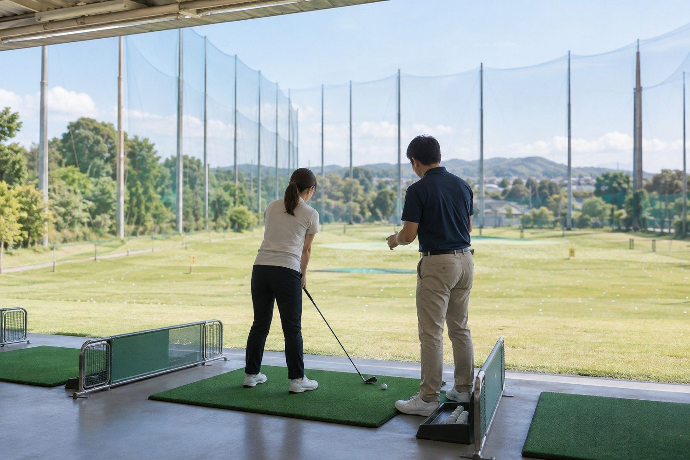
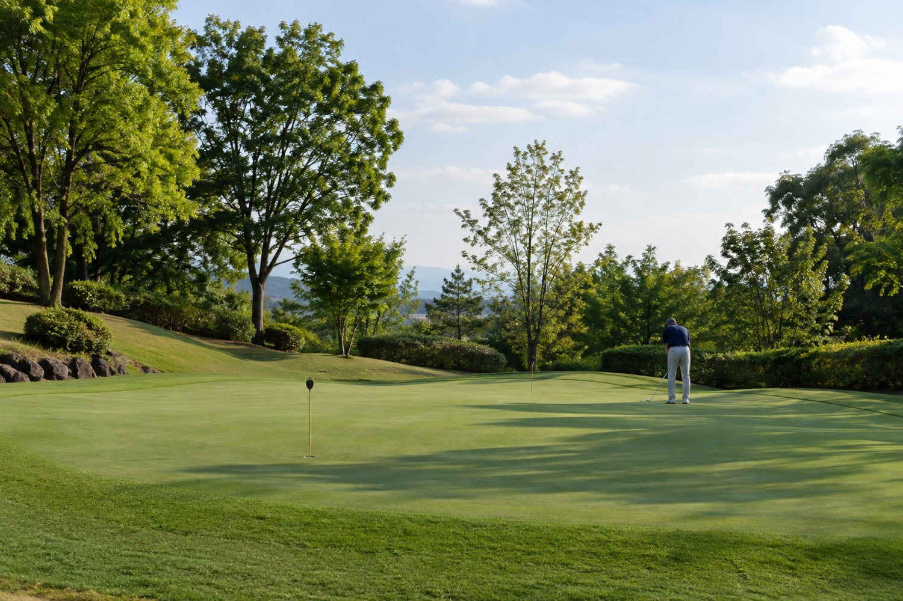

初心者クラス
月額 8,800円
クラブの握り方から、スイングの基本まで。最大6名の少人数クラス。
週1回・60分／月4回・ボール代込み
このプランを相談する初めてでも、久しぶりでも。
上達のペースは人それぞれ。経験と目標に合わせて、無理なく楽しむお手伝いをします。

月額 8,800円
クラブの握り方から、スイングの基本まで。最大6名の少人数クラス。
週1回・60分／月4回・ボール代込み
このプランを相談する月額 6,600円
安全とマナーを大切に、体を動かす楽しさから始めます。
週1回・50分／月4回・ボール代込み
このプランを相談する1回 4,400円
フォームの見直しや苦手なショットを、マンツーマンで。
30分／予約制・ボール代別
このプランを相談するまずは一度、体験してみませんか。
40分・レンタルクラブ＆ボール代込み。動きやすい服装と運動靴でお越しください。料金はすべて税込です。
「できた」を積み重ねるレッスンを。基本の動きから丁寧にお伝えします。
担当：初心者・個人
まずはゴルフを楽しむことから。一人ひとりのペースを大切にします。
担当：ジュニア・個人紹介人物・レッスン内容は見本用の設定です。画像はイメージです。
まずは、気軽に一球から。